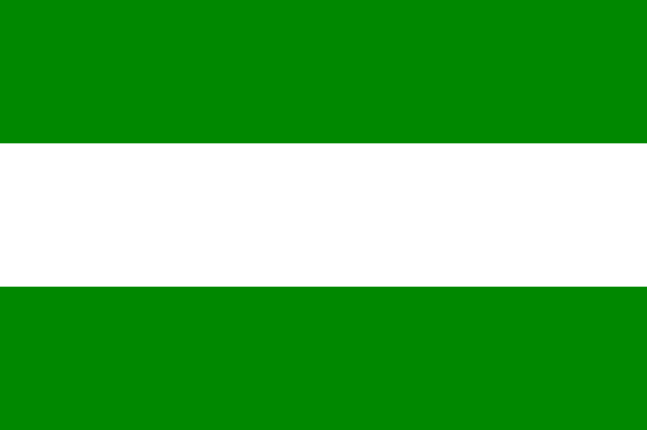

Elecciones de Costa Rica 2018
Home
Votaciones
Encuestas
Candidatos
Carlos Alvarado
Fabricio Alvarado
Antonio Álvarez Desanti
Juan Diego Castro
Candidatos a la Presidencia
Link Información
Candidato Profesional
Partido
Perfil
Carlos Alvarado Quesada
Partido Acción Ciudadana
Perfil
Fabricio Alvarado
Partido Restauración Nacional
Perfil
Antonio Álvarez Desanti
Partido Liberación Nacional

Perfil
Juan Diego Castro Fernández
Partido Integración Nacional
Resultados Electorales
Partido
Candidato
Primera Ronda
Segunda Ronda
Carlos Alvarado Quesada
5.7
5.6
Fabricio Alvarado
8,3
18,4
Antonio Álvarez Desanti
26,2
22,0
Juan Diego Castro
25,3
20,7